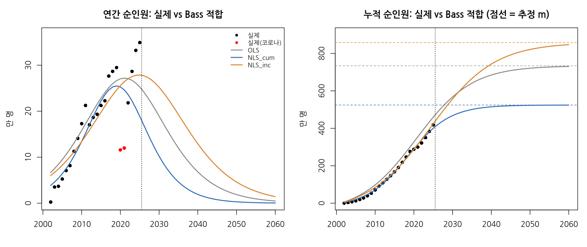
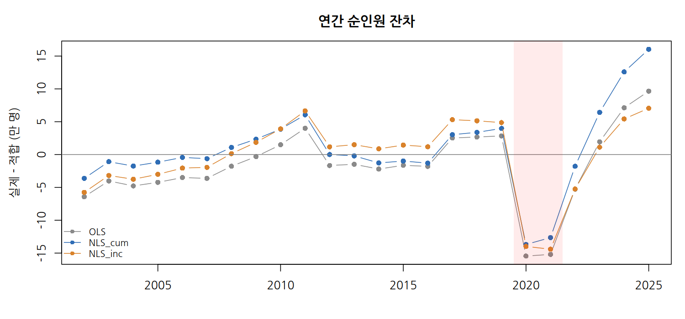
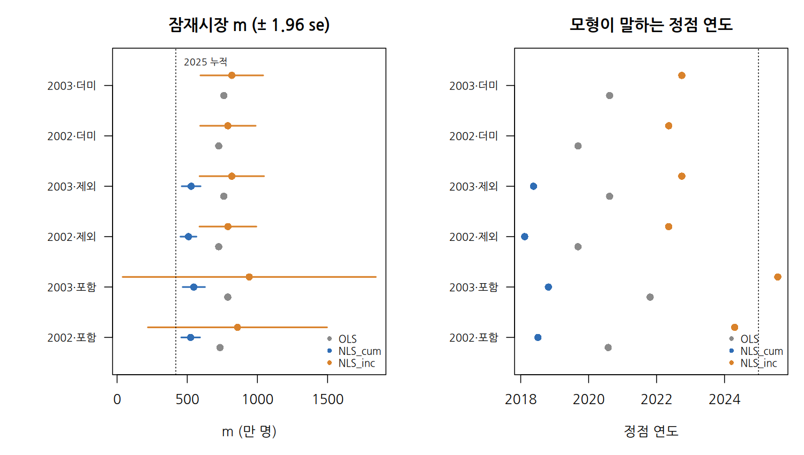
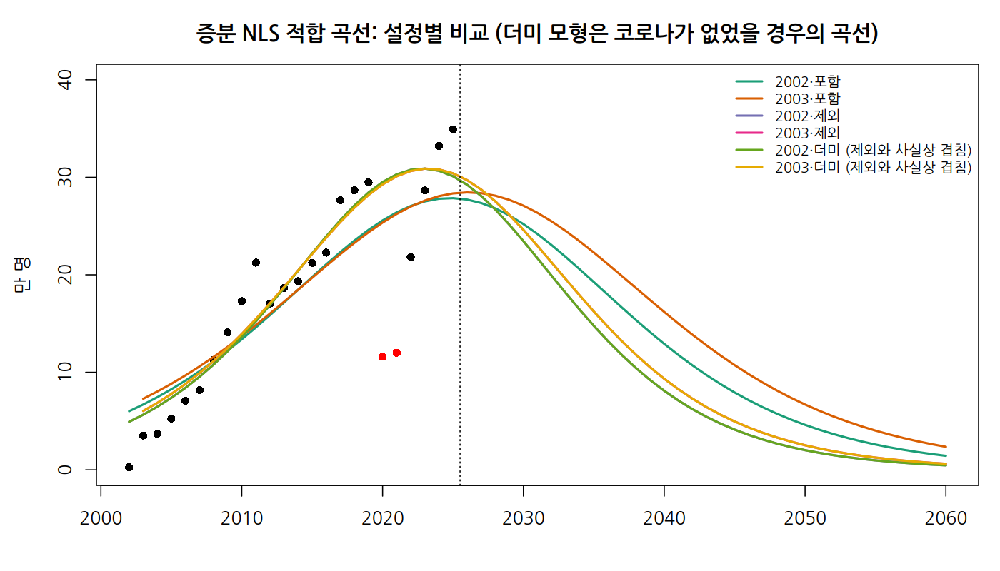
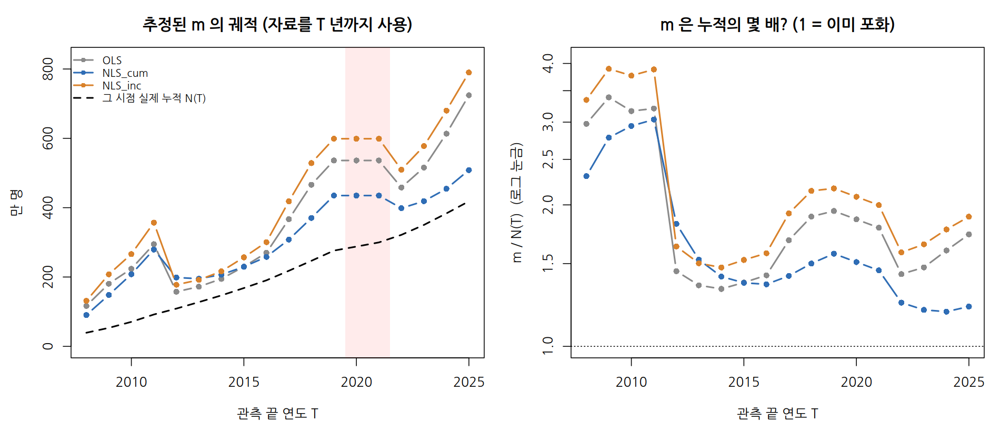
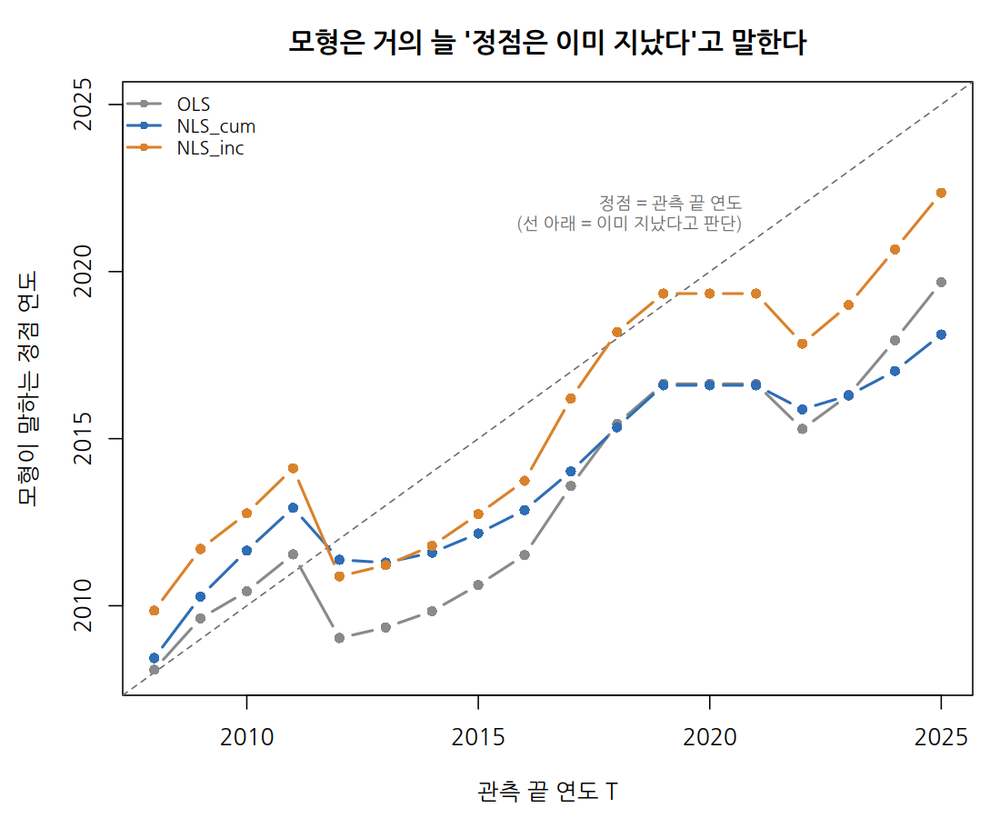
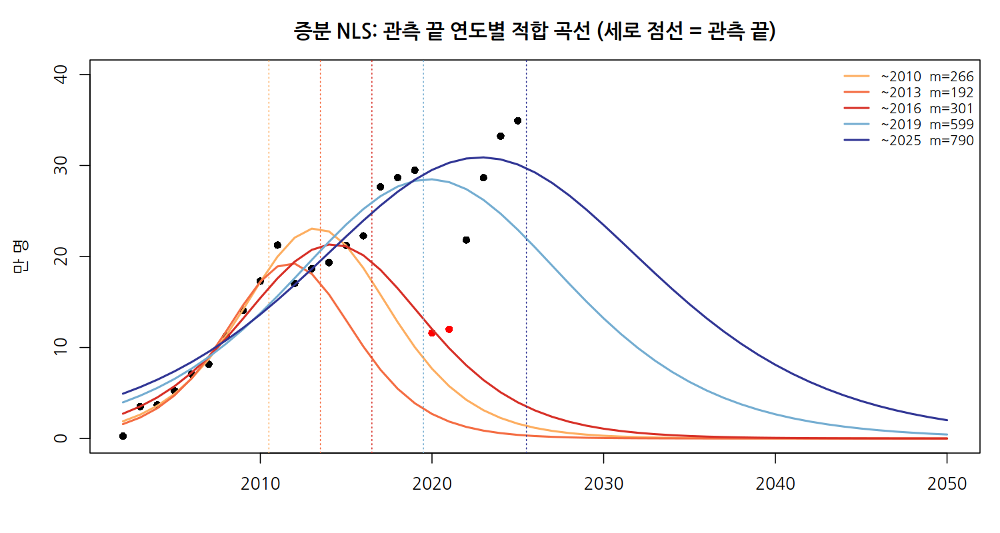

Bass 확산 모형 입문 가이드: 템플스테이 수요 예측 사례
코드와 데이터: 스크립트 보기 · 전체 내려받기 (zip)
이 문서는 무엇인가요? 템플스테이 수요를 Bass 확산 모형으로 예측한 논문 한 편을 출발점으로, 공개 통계를 이용해 분석 전 과정을 직접 재현하고 검증해 본 기록입니다. 동료들과 공유하고, 비슷한 자료를 분석할 때 참고서로 쓰기 위해 정리했습니다.
대상: 평균, 회귀분석, 그래프 읽기 정도는 익숙하지만, 수요 예측 모형은 처음이거나 익숙하지 않은 분
읽는 순서: 처음이라면 1장(요약) → 2장(모형 개념) → 5장(단계별 실습) 순서를 권합니다. 모르는 용어가 나오면 4장(용어 풀이)으로 돌아가 보세요. 수식은 몰라도 읽을 수 있도록, 수식은 “선택” 표시가 된 곳에만 모아 두었습니다.
함께 보는 파일: 코드와 데이터 페이지의 R 스크립트 6개와 예시 자료 (10장 참고)
1. 한 페이지 요약
1.1 무엇을 했나
2024년에 발표된 한 논문은 템플스테이 참가자 수에 Bass 확산 모형을 적용해 “2023년에 이미 잠재 수요의 77%가 참가했고, 앞으로 수요가 줄어든다”고 예측했습니다. 이 분석을 같은 방법으로 재현하고, 이후 실제 자료(2024~2025년)와 비교하고, 다른 방법으로도 분석해 봤습니다.
1.2 무엇을 알게 됐나
| 질문 | 쉽게 말한 답 |
|---|---|
| 논문의 예측은 맞았나? | 틀렸습니다. 논문은 감소를 예측했지만, 실제 참가자(순인원)는 2024년 +15.9%, 2025년 +5.1%로 역대 최다를 기록했습니다. |
| 논문은 어떻게 계산했나? | 가장 단순한 추정 방법(OLS)을 썼고, 저희가 같은 방법으로 계산하자 논문의 숫자가 거의 그대로 나왔습니다. |
| 기본 Bass 모형이 이 자료에 맞나? | 잘 맞지 않습니다. 계산 방법만 바꿔도 “앞으로 참가할 총인원”이 524만~858만 명으로 크게 달라졌고, 예측 시험에서는 “작년 값 그대로”라는 가장 단순한 예측에도 졌습니다. |
| 왜 안 맞았나? | 기본 모형은 “한 사람은 한 번만 참가하고, 시장 크기는 정해져 있다”고 가정합니다. 그런데 템플스테이는 다시 오는 사람이 있고, 운영 사찰 수(공급)가 계속 늘어난 시장입니다. |
| 어떻게 고쳤나? | “시장 크기가 사찰 수에 비례해 커진다”고 모형을 바꾸자 오차가 절반으로 줄었습니다. |
| 정책적으로는? | 사찰 수를 그대로 두면 2030년대에 연간 참가자가 줄고, 매년 6곳씩 늘리면 2035년 연간 약 40만 명까지 늘어납니다. 단, 새 사찰의 질(만족도)이 떨어지면 효과가 크게 줄어듭니다. |
1.3 가장 중요한 교훈
모형의 결론은 모형의 가정에서 나옵니다. 같은 자료라도 “시장 크기가 고정되어 있다”고 가정하면 “이미 포화 중”이라는 결론이 나오고, “공급이 시장을 키운다”고 가정하면 “수요는 공급 정책에 달려 있다”는 결론이 나옵니다.
2. Bass 확산 모형이란 무엇인가
2.1 출발점: 새로운 것은 어떻게 퍼지는가
스마트폰이 처음 나왔을 때를 떠올려 보세요.
- 처음에는 새것을 좋아하는 소수만 삽니다.
- 주변에 쓰는 사람이 늘면 “나도 써 볼까” 하는 사람이 빠르게 늘어납니다.
- 대부분이 갖게 되면 새로 사는 사람은 점점 줄어듭니다.
그래서 해마다 새로 산 사람 수를 그래프로 그리면 종 모양(늘다가 정점을 찍고 줄어듦)이 되고, 지금까지 산 사람의 누적을 그리면 S자 곡선이 됩니다. 사회학자 로저스(Rogers, 1962)가 정리한 혁신 확산 이론입니다.
해마다 새로 채택한 사람 (종 모양) 누적 채택자 (S자)
▁▃▆█▆▃▁ ▁▁▁▁ ← 천장 (m)
▁▃ ▃▁ ▃▆
▁▃ ▃▁ ▃
▁▃ ▃▁ ▁▃
─────────────────────▶ 시간 ▁▁▁▃ ──────────▶ 시간
↑ 정점로저스는 받아들이는 시점에 따라 사람들을 다섯 부류로 나눴습니다.
| 부류 | 비율 | 특징 |
|---|---|---|
| 혁신층 | 2.5% | 새로운 것 자체를 즐기고 위험을 감수 |
| 초기 수용층 | 13.5% | 여론 주도층, 남보다 먼저 받아들임 |
| 초기 다수층 | 34% | 신중하지만 평균보다 먼저 |
| 후기 다수층 | 34% | 대다수가 쓴 뒤에 받아들임 |
| 지체층 | 16% | 가장 늦게, 또는 끝까지 받아들이지 않음 |
신규 채택이 가장 많은 정점은 대략 잠재 고객의 절반 가까이가 채택했을 때 나타납니다.
2.2 Bass 모형: 확산을 두 가지 힘으로 설명
바스(Bass, 1969)는 이 과정을 숫자로 계산할 수 있게 만들었습니다. 사람들이 새것을 받아들이는 이유를 두 가지 힘으로 단순화합니다.
| 힘 | 기호 | 뜻 | 비유 |
|---|---|---|---|
| 외부 영향 (혁신 효과) | p | 남과 상관없이 광고·언론을 보고 스스로 채택 | 신문에서 새 식당 기사를 보고 찾아감 |
| 내부 영향 (모방 효과) | q | 이미 채택한 사람의 입소문을 듣고 채택 | 친구가 가 봤는데 좋더라고 해서 찾아감 |
그리고 여기에 하나가 더 필요합니다.
| 기호 | 뜻 | 비유 |
|---|---|---|
| m (잠재시장) | 결국 채택하게 될 사람의 총수. 누적 S자 곡선의 천장 | 그 식당에 언젠가 한 번이라도 갈 사람의 총수 |
작동 방식을 말로 풀면:
- 초기에는 채택한 사람이 거의 없어서 입소문(q)이 약합니다. 주로 광고(p)의 힘으로 조금씩 늘어납니다.
- 채택자가 늘수록 입소문의 힘이 커져서 증가가 빨라집니다.
- 아직 채택하지 않은 사람(m − 누적 채택자)이 줄어들면서 증가가 느려지고, 결국 천장 m에 다가갑니다.
p와 q의 일반적인 크기: p는 보통 0.01~0.03, q는 0.3~0.5 범위입니다. 여러 제품을 모아 분석한 연구(Sultan, Farley & Lehmann, 1990)에 따르면 평균적으로 p ≈ 0.03, q ≈ 0.38 정도이고, 새 제품의 자료가 부족할 때 이런 값을 빌려 쓰기도 합니다. 대개 q가 p보다 훨씬 커서, 확산은 광고보다 입소문으로 퍼진다고 볼 수 있습니다.
2.3 모형이 알려 주는 것
p, q, m 세 숫자를 추정하면 다음을 계산할 수 있습니다.
- 정점 시점: 연간 신규 채택이 가장 많은 해는 언제인가
- 정점 규모: 그해 몇 명이 새로 채택하는가
- 도달률: 지금까지 잠재시장의 몇 %가 채택했는가
- 미래 예측: 앞으로 해마다 몇 명이 새로 채택하는가
2.4 (선택) 수식으로 보기
수식이 익숙하지 않다면 이 절은 건너뛰어도 됩니다.
① 기본 아이디어
아직 채택하지 않은 사람 중 올해 채택하는 비율 = p + q × (지금까지의 채택 비율)지금까지의 채택 비율이 0이면 p만큼만 채택하고, 채택 비율이 높아질수록 q만큼 더 채택합니다.
② 연 단위 계산식 (추정에 자주 쓰는 형태)
올해 신규 채택자 n(t) = [ p + q × N(t-1) / m ] × [ m − N(t-1) ]
= (올해의 채택률) × (아직 채택하지 않은 사람 수)N(t-1)은 작년까지의 누적 채택자입니다. 이 식을 풀어 쓰면 N(t-1)에 대한 2차식이 됩니다.
n(t) = p·m + (q − p)·N(t-1) − (q/m)·N(t-1)²
= a + b ·N(t-1) + c ·N(t-1)²③ 누적 곡선 (그래프를 그릴 때 쓰는 형태)
F(t) = [1 − e^{−(p+q)t}] / [1 + (q/p)·e^{−(p+q)t}] (누적 채택 비율)
N(t) = m × F(t) (누적 채택자)④ 정점 공식
| 항목 | 공식 | 뜻 |
|---|---|---|
| 정점 시점 | ln(q/p) / (p + q) | 연간 신규 채택이 가장 많은 시점 |
| 정점 규모 | m(p + q)² / 4q | 정점 연도의 신규 채택 수 |
| 정점의 도달률 | (q − p) / 2q | q가 p보다 훨씬 크면 약 50% |
q가 p보다 크면 S자 모양이 되고, p가 q보다 크면 처음에 가장 많이 채택하고 점점 줄어드는 모양이 됩니다.
3. 언제 잘 맞고, 언제 조심해야 하는가
3.1 기본 Bass 모형의 네 가지 가정
Bass 모형은 다음을 전제로 합니다. 이 가정이 내 자료와 얼마나 다른지가 결과를 믿을 수 있는지를 좌우합니다.
| 가정 | 쉽게 말하면 |
|---|---|
| 한 사람은 한 번만 채택한다 | 두 번째 구매·재방문은 세지 않는다 |
| 잠재시장 m은 고정되어 있다 | 천장의 높이가 처음부터 정해져 있다 |
| 공급 제약이 없다 | 원하는 사람은 언제든 채택할 수 있다 (물건이 모자라지 않는다) |
| p와 q는 일정하다 | 광고·입소문의 힘이 기간 내내 같다 |
3.2 잘 맞는 경우
한 번 사면 끝나는 내구재나 가입형 서비스처럼, 모집단이 정해져 있고 공급 병목이 없는 경우입니다. TV, 스마트폰, 초고속 인터넷 보급이 교과서적인 사례입니다.
3.3 조심해야 하는 경우
| 상황 | 무엇이 문제인가 | 템플스테이에서는 |
|---|---|---|
| 재구매·재방문이 섞인 자료 | 포화가 늦게 오고, m의 뜻이 모호해짐 | 재참가자가 해마다 새로 세어짐 |
| 공급이 계속 늘어난 시장 | 시장이 커지는 것을 모형이 알지 못함 | 운영 사찰이 33곳 → 150곳 이상으로 증가 |
| 공급이 수요를 막는 시장 | 공급이 멈춘 시기를 “포화”로 착각 | 2011~2016년 사찰 수 정체기 |
| 외부 충격이 있는 시기 | 추정이 불안정해짐 | 코로나19 (2020~2021) |
| 정점 이전 자료만 있을 때 | 천장 m을 거의 알 수 없음 | 5장 5단계에서 확인 |
3.4 데이터가 갖춰야 할 최소 요건
“그래도 Bass 모형이 쓸모 있는 곳” 가정이 맞지 않아 점 예측(내년에 정확히 몇 명)에는 약하더라도, 다음 용도로는 여전히 유용합니다. - 확산이 광고(p)와 입소문(q) 중 어디에 기대는지 구조를 해석하는 틀 - “천장이 이 정도라면”을 가정해 보는 시나리오 분석 - 자료가 없는 신제품에 비슷한 제품의 p·q를 빌려 오는 출시 전 예측
4. 알아두면 좋은 용어
5장을 읽다가 모르는 말이 나오면 이 장으로 돌아오세요.
4.1 자료에 관한 용어
- 순인원 / 연인원
- 순인원은 참가한 사람 수, 연인원은 사람 수 × 참가 일수입니다. 1박 2일 참가자 1명은 순인원 1명, 연인원 2명입니다.
- 신규 n(t) / 누적 N(t)
- n(t)는 그해 새로 채택한 수, N(t)는 그해까지 채택한 수의 합계입니다.
- 도달률 F(t)
- 누적 채택자 ÷ 잠재시장(m). “잠재 고객 중 몇 %가 이미 채택했나”입니다.
- 위상도
- 가로축에 작년까지의 누적, 세로축에 올해 신규를 놓고 점을 찍은 그림입니다. Bass 모형이 맞는 자료라면 점들이 뒤집힌 U자 위에 놓입니다. U자의 꼭짓점이 정점, 오른쪽 끝이 가로축과 만나는 곳이 천장(m)입니다.
4.2 추정 방법에 관한 용어
p, q, m 세 숫자를 자료로부터 계산하는 방법이 여러 가지인데, 방법마다 결과가 크게 달라질 수 있습니다. 이번 분석의 핵심 발견 중 하나입니다.
| 방법 | 쉽게 말하면 | 특징 |
|---|---|---|
| OLS (Bass 1969 방식) | 올해 신규를 작년 누적의 2차식으로 놓고 일반 회귀분석으로 계산한 뒤, 계수에서 p·q·m을 거꾸로 풀어냄 | 가장 간단하지만, m의 불확실성(표준오차)을 바로 알 수 없고 계산이 불가능한 경우도 있음 |
| 누적 NLS | 누적 S자 곡선을 누적 자료에 직접 맞춤 | 곡선이 매끄럽게 맞지만, 불확실성을 실제보다 작게 계산하는 경향 |
| 증분 NLS (Srinivasan & Mason 1986) | 해마다의 신규 자료에 곡선을 맞춤 | 연간 자료의 구조에 가장 충실하고 불확실성 계산이 상대적으로 정직함. 대신 계산이 까다로움 |
- OLS (최소제곱법)
- 실제 값과 예측 값의 차이를 제곱해 더한 값이 가장 작아지게 계수를 정하는 일반적인 회귀분석입니다.
- NLS (비선형 최소제곱)
-
곡선처럼 복잡한 모형에 같은 원리를 적용하는 방법입니다. 컴퓨터가 값을 조금씩 바꿔 가며 반복 계산하는데, 어디서 출발하느냐(시작값)에 따라 답이 달라질 수 있어서 여러 시작값으로 돌려 가장 잘 맞는 답을 고릅니다(다중 시작점 방식). R에서는
nls()함수입니다. - 자기상관 (누적 자료의 함정)
- 누적값은 과거의 모든 값이 쌓인 것이라, 한 해의 오차가 다음 해 누적값에 그대로 이어집니다. 오차들이 서로 독립적이지 않으면, 컴퓨터는 실제보다 더 정확하게 추정했다고 착각합니다. 그래서 누적 NLS의 표준오차는 그대로 믿기 어렵습니다.
- 더미 변수
- 특정 기간(예: 코로나 2020~2021년)에만 1, 나머지는 0인 변수입니다. 그 기간의 특수한 효과를 따로 떼어 추정하는 데 씁니다.
4.3 모형을 평가하는 용어
- R² (결정계수)
- 모형이 실제 값의 오르내림을 몇 %나 설명하는지 나타냅니다(1에 가까울수록 좋음). 단, 이미 있는 자료를 잘 설명한다는 뜻이지, 미래를 잘 맞힌다는 뜻은 아닙니다.
- RSS / RMSE
- RSS는 오차를 제곱해 더한 값, RMSE는 평균적인 오차의 크기입니다. 작을수록 좋고, 같은 형태의 모형끼리만 비교해야 공정합니다.
- 표준오차 (se)
- 추정값이 얼마나 흔들릴 수 있는지 나타냅니다. 대략 추정값 ± 2 × 표준오차가 95% 신뢰구간입니다. 표준오차가 추정값의 절반을 넘으면 사실상 “정해지지 않았다”고 봐야 합니다.
- 잔차 그림
- 해마다 (실제 − 예측)을 그린 그림입니다. 오차가 한쪽(늘 과대 또는 늘 과소)으로 몰리거나 추세가 보이면, 모형의 구조가 자료와 맞지 않는다는 신호입니다.
- MAPE (평균 절대 백분율 오차)
- 예측이 평균적으로 몇 % 빗나갔는지입니다. 20%면 평균 20% 틀렸다는 뜻입니다.
4.4 예측을 검증하는 용어
- 표본 내 적합 vs 표본 밖 예측
- 모형을 만들 때 쓴 자료를 잘 설명하는 것(표본 내)과, 모형이 보지 못한 미래를 맞히는 것(표본 밖)은 전혀 다른 능력입니다. 시험 문제를 미리 보고 푼 점수와 처음 보는 문제를 푼 점수가 다른 것과 같습니다. 예측 모형은 반드시 표본 밖에서 평가해야 합니다.
- Holdout 검증
- 최근 몇 년의 자료를 일부러 숨겨 두고, 그 전까지의 자료로 만든 모형이 숨긴 기간을 맞히는지 보는 방법입니다.
- Rolling origin 평가
- Holdout을 예측 시작 시점을 한 해씩 옮겨 가며 여러 번 반복하는 것입니다. 한두 번의 시험에 섞이는 운을 줄여 줍니다.
시험 1: [2002 ─────── 2010 자료로 추정] → 2011 예측
시험 2: [2002 ──────── 2011 자료로 추정] → 2012 예측
시험 3: [2002 ───────── 2012 자료로 추정] → 2013 예측
...- 벤치마크 (기준선)
- 복잡한 모형이 최소한 넘어야 할 단순 예측입니다. 이것도 못 넘으면 복잡한 모형을 쓸 이유가 없습니다. - Naive: “올해도 작년과 같다.” 수준이 안정적일 때 강합니다. - Drift: “최근 몇 년의 평균 증가분만큼 계속 늘어난다.” 추세가 안정적일 때 강합니다.
- 부트스트랩 구간
- 모형의 오차를 무작위로 다시 뽑아 가상 자료를 수백 번 만들고, 매번 모형을 다시 추정해 예측한 결과의 범위입니다. “추정이 이만큼 흔들리면 예측은 이만큼 흔들린다”를 보여 줍니다.
4.5 모형 확장에 관한 용어
- 동적 잠재시장 (동적 m) (Mahajan & Peterson, 1978 계열)
- 천장 m이 고정값이 아니라 시간에 따라 변하도록 한 모형입니다. 이번에는 m = k × 사찰 수로, 사찰이 늘면 천장이 올라갑니다.
- k
- 사찰 1곳이 떠받치는 잠재 참가자 규모입니다.
- GBM (Generalized Bass Model) (Bass, Krishnan & Jain, 1994)
- 가격·광고·공급 같은 변수가 확산의 속도를 조절한다고 본 모형입니다. 천장은 그대로 두고 그 천장에 도달하는 속도를 앞당기거나 늦춥니다.
- 반복 구매 모형
- 신규 채택과 재구매를 분리하는 모형입니다. 이번에는 재참가 자료가 없어 적용하지 못했습니다.
5. 실습: 템플스테이 자료로 단계별 분석하기
5.0 출발점: 논문과 데이터
참고 논문
강문영 (2024). “Bass 확산 모형을 기반으로 한 템플스테이 수요 예측.” 상품학연구, 42(5), 35–39.
- 자료: 2002~2023년 연도별 템플스테이 참가자 수
- 결과: m = 907.5만 명, p = .01, q = .18 (코로나 이전 2002~2019 자료로는 m = 954.3만 명)
- 결론: 2023년 말에 잠재시장의 77%에 도달했고, 앞으로 연간 증가율이 급감하므로 수요 감소에 대비해야 한다
처음 읽을 때 생긴 의문 네 가지
- 다시 오는 참가자가 섞인 서비스에, “한 사람은 한 번만”을 가정하는 모형을 그대로 썼다.
- 운영 사찰이 33곳에서 150곳으로 늘어난 공급 확대를 고려하지 않았다.
- 논문 표 1을 보면 13개 연도 모두에서 예측이 실제보다 높다. 우연이라면 높고 낮음이 섞여야 한다.
- 어떤 추정 방법을 썼는지, 추정이 얼마나 불확실한지(표준오차)를 밝히지 않았다.
데이터
| 자료 | 기간 | 내용 | 출처 |
|---|---|---|---|
| 템플스테이 20년사 | 2002~2021 | 사찰 수, 순인원·연인원 (내국인/외국인/합계) | 한국불교문화사업단, 『템플스테이 20년사』 p.272 |
| 연합뉴스 기사 표 | 2016~2025 | 사찰 수, 순인원 (내국인/외국인/합계), 2002~2025 누적 | 연합뉴스 AKR20260115161800005 (한국불교문화사업단 제공) |
연합뉴스 표에는 “재판매 및 DB 금지” 표기가 있습니다. 내부 학습·참고용으로 쓰되, 외부 배포나 데이터베이스화는 피하고 출처를 반드시 밝혀 주세요.
가장 먼저 확인해야 했던 것: 무엇을 셌는가
처음에는 연합뉴스 수치가 논문 수치의 절반 정도여서 혼란스러웠습니다. 20년사를 확인해 보니 이유는 단순했습니다.
| 구분 | 뜻 | 1박 2일 참가자 1명이면 | 사용한 곳 |
|---|---|---|---|
| 순인원 | 참가한 사람 수 | 1명 | 연합뉴스 |
| 연인원 | 사람 수 × 참가 일수 | 2명 | 논문 |
연인원을 2002~2011년까지 더하면 204.9만 명으로, 논문 표 1의 2011년 누적과 정확히 일치했습니다.
이번 분석은 순인원을 씁니다. 이유는 두 가지입니다.
- Bass 모형의 m은 “사람 수”이므로 순인원이 모형의 뜻에 더 가깝습니다.
- 연인원 ÷ 순인원 비율이 2002년 4.6에서 2017년 1.8로 변했습니다. 연인원을 쓰면 체류 일수가 줄어든 변화가 수요 변화처럼 섞여 들어갑니다.
다만 순인원도 다른 해에 다시 온 사람을 새로 셉니다. 엄밀한 의미의 “채택자(처음 참가한 사람)”와는 다르다는 점을 기억해 두세요.
데이터 검증
- 20년사의 누적 합계 6개(순인원·연인원 × 내국인·외국인·합계)가 모두 연도별 값의 합과 일치했습니다.
- 20년사 2002~2021 순인원 합계(2,998,073)에 연합뉴스 2022~2025 값을 더하면 4,184,373으로, 연합뉴스 표의 2002~2025 누적과 정확히 일치합니다.
- 불일치 1건: 2019년 내국인 순인원이 20년사에는 247,783, 연합뉴스에는 247,738입니다. 247,738 + 외국인 47,058 = 합계 294,796이 되므로 247,738로 정정했습니다(차이 45명, 분석 영향 없음).
- 통합 자료:
templestay_2002to2025.csv(순인원 2002~2025, 연인원 2002~2021, 사찰 수)
교훈: 모형을 돌리기 전에 자료의 정의(무엇을 셌는가)부터 확인하세요. 이 확인 하나로 논문과 숫자가 다른 이유가 풀렸고, 어떤 자료가 모형에 더 맞는지도 정해졌습니다.
(참고) 분석 설계가 바뀐 과정
처음에는 연합뉴스 자료(2016~2025, 10년치)만 있어서, 앞 14년이 잘린 자료로 분석하는 방법을 검토했습니다. 이때 정답을 아는 가상 자료로 모의실험을 해서 세 가지를 확인했습니다.
- 정점 이전 자료로는 m이 크게 흔들린다.
- OLS는 앞이 잘린 자료에서 p를 거의 추정하지 못한다.
- NLS는 도입 시점과 관측 직전 누적값을 알면 잘린 자료에서도 비교적 잘 추정한다.
이후 20년사 자료를 확보해 2002~2025년 24개 연도의 완전한 계열을 만들 수 있게 되었고, 혼란을 피하려고 모의실험 결과는 정리했습니다. 아래 분석은 모두 완전한 계열을 이용했습니다.
5.1 전체 흐름
| 단계 | 스크립트 | 알고 싶은 것 |
|---|---|---|
| 1 | 01_data_explore.R |
모형을 돌리기 전에, 자료는 어떤 모양인가? |
| 2 | 02_bass_fit.R |
계산 방법에 따라 p·q·m이 얼마나 다른가? |
| 3 | 03_specification.R |
분석자의 선택(출발 연도, 코로나 처리)이 결과를 얼마나 바꾸는가? |
| 4 | 04_forecast_validate.R |
처음 보는 기간도 잘 맞히는가? 논문은 정확히 어떻게 계산했나? |
| 5 | 05_rolling_origin.R |
자료가 쌓일수록 추정이 안정되는가? |
| 6 | 06_supply_scenarios.R |
공급(사찰 수)을 반영하면 어떻게 달라지는가? 정책 시나리오별로는? |
단위는 모두 만 명(순인원)이고, 2002년을 1년차로 놓습니다(3단계 비교 제외).
5.2 1단계: 자료 살펴보기
알고 싶은 것: 모형을 적용하기 전에 자료의 모양을 눈으로 봅니다. S자 곡선인지, 정점을 지났는지, 이상한 해는 언제인지, 공급과 어떤 관계인지 확인합니다.

발견 ① 아직 정점을 지나지 않았다
- 누적값은 원래 줄어들 수 없으니, “누적이 늘고 있다”는 것만으로는 정점을 판단할 수 없습니다.
- 정점은 해마다의 신규 참가자 수(누적 곡선의 기울기)로 판단해야 합니다. 연간 순인원은 2025년(34.9만)이 역대 최대이고, 누적 곡선도 아직 가팔라지는 모양입니다.
- 한 해 줄었다고 정점은 아닙니다. 2012년(−19.8%)과 2020년(−61%)의 감소는 모두 정점이 아니었습니다. 감소가 계속되는지 봐야 합니다.
발견 ② 공급과 수요가 함께 움직였다
- 2003→2019년 연평균 증가율은 참가자(순인원) 14.2%, 사찰 수 14.4%로 거의 같고, 두 계열의 상관은 r = .95입니다.
- 참가자 증가를 “사찰 수 증가 × 사찰당 참가자 증가”로 나눠 보면, 2005→2019년에 사찰 수는 약 3.3배, 사찰당 순인원은 약 1.7배(1,282명 → 2,152명) 늘었습니다. 증가의 큰 몫은 공급 확대에서 왔고, 사찰당 수요도 함께 늘었습니다.
- 단, 어느 쪽이 원인인지는 알 수 없습니다. 수요가 있어서 사찰이 참여했을 수도 있습니다.
발견 ③ 공급이 멈추면 수요도 멈췄다
2011~2016년 사찰 수는 118곳 → 123곳으로 사실상 멈췄고, 참가자도 21만 명 안팎에서 맴돌았습니다. 2017년 사찰이 14곳 늘자 참가자가 24% 뛰었습니다.
발견 ④ 이상한 해
2002년(월드컵 특수, 외국인 49%), 2012년(사찰 수 감소), 2020~2021년(코로나, −61%)

위상도 읽는 법
- 가로축은 작년까지의 누적, 세로축은 올해 신규입니다.
- Bass 모형이 맞다면 점들이 뒤집힌 U자(포물선) 위에 놓여야 합니다. 꼭짓점이 정점, 오른쪽 끝이 천장(m)입니다.
- 2019년까지는 점들이 포물선처럼 꺾이는 모양이었습니다. 코로나 연도를 빼고 그린 것이라 코로나 탓은 아니고, 상당 부분 2011~2016년의 공급 정체가 만든 모양일 수 있습니다.
- 코로나 이후 2022~2025년 점들은 그 곡선 위로 다시 올라갔습니다. 2010년대의 둔화를 “포화”의 신호로 보기 어렵게 만드는 대목입니다.
1단계 요약: 자료는 아직 정점 전이고, 공급과 강하게 함께 움직입니다. 공급이 멈춘 시기의 둔화를 포화로 착각하지 않도록 조심해야 합니다.
5.3 2단계: 세 가지 방법으로 기본 추정
알고 싶은 것: 같은 자료에 계산 방법만 바꾸면 결과가 얼마나 달라지는가?
설정: 순인원 2002~2025, 코로나 포함, 아무것도 손대지 않은 기본형
| 방법 | p | q | m (표준오차) | 모형이 말하는 정점 | 2025년 도달률 | R² |
|---|---|---|---|---|---|---|
| OLS | .0086 | .131 | 734 (–) | 2020.6 | 57% | .63 |
| 누적 NLS | .0068 | .181 | 524 (±34) | 2018.5 | 80% | .59 |
| 증분 NLS | .0066 | .116 | 858 (±326) | 2024.3 | 49% | .68 |
표 읽는 법: m은 “앞으로 언젠가 참가할 총인원(만 명)”, 도달률은 “모형이 보기에 그중 몇 %가 2025년까지 이미 참가했나”입니다.


해석
- p와 q는 비슷한데 m이 크게 갈립니다. 방법에 따라 천장이 524만~858만 명으로 달라집니다.
- q가 커 보이는 데는 함정이 있습니다. q/p가 15~27로 입소문 효과가 강해 보이지만, Bass 모형에는 공급 변수가 없어서 사찰 증가로 생긴 성장까지 입소문(q)이 떠안았을 가능성이 큽니다. 6단계에서 확인합니다.
- m은 사실상 정해지지 않았습니다. 증분 NLS의 m 표준오차가 326이라 95% 구간이 대략 200만~1,500만 명입니다. “천장이 200만일 수도, 1,500만일 수도 있다”는 뜻입니다. OLS에서도 곡선의 휘어짐을 나타내는 2차항이 유의확률 .098로 약합니다.
- 누적 NLS의 작은 표준오차(±34)는 믿기 어렵습니다. 4장에서 설명한 누적 자료의 자기상관 때문에 실제보다 작게 계산된 것입니다. 이 모형은 “2018년이 정점, 이미 80% 도달”이라고 하는데, 2024~2025년의 역대 최다 기록과 맞지 않습니다.
- 오차에 일정한 패턴이 있습니다. 초기에는 모든 모형이 실제보다 높게, 2022~2025년에는 모두 실제보다 낮게 예측했고 그 차이가 점점 커집니다. 실제 성장은 Bass 곡선보다 완만하고 오래 이어지는 모양이라는 뜻입니다.
2단계 요약: 계산 방법에 따라 천장이 크게 달라지고, 어느 방법도 최근의 성장을 따라가지 못합니다.
5.4 3단계: 분석 설정을 바꿔 보기
알고 싶은 것: 분석자가 내리는 선택이 결과를 얼마나 바꾸는가?
바꿔 본 선택
- 출발 연도: 2002년(월드컵 특수 포함) vs 2003년
- 코로나 2020~2021년: ① 그대로 포함 ② 빼고 분석 ③ 더미 변수로 따로 처리
이렇게 2 × 3 = 6가지 설정으로 돌렸습니다.
| 방법 | 6가지 설정에서 m의 범위 | 정점 범위 |
|---|---|---|
| 누적 NLS | 509 ~ 547 | 2018년 |
| OLS | 724 ~ 789 | 2020~2022년 |
| 증분 NLS | 790 ~ 942 | 2022~2026년 |


해석
- 계산 방법의 선택이 설정의 선택보다 훨씬 중요합니다. 설정을 바꾸면 m이 40만~150만 명 움직이지만, 방법을 바꾸면 300만~400만 명이 달라집니다.
- 출발 연도의 영향은 작습니다. 2002년 참가자가 0.26만 명뿐이라 모형에 주는 무게가 작습니다.
- 코로나를 빼면 추정이 정밀해집니다. 증분 NLS의 m 표준오차가 326에서 103으로 줄었습니다. 급감한 두 해가 곡선을 눌러 m을 흔들고 있었던 것입니다.
- 더미로 처리한 결과는 빼고 분석한 결과와 거의 같습니다. 더미를 넣으면 코로나 두 해는 자기만의 값을 갖게 되어 p·q·m 계산에 영향을 주지 않기 때문입니다. 더미가 잡아낸 코로나 효과는 OLS에서 약 −18만 명, 증분 NLS에서 약 61% 감소입니다.
- 두 더미가 가정하는 상황은 다릅니다. OLS 더미는 “코로나로 못 온 사람이 잠재 참가자로 남아 있다”고 보고, 증분 NLS 더미는 “확산의 시계는 그대로 흐르고, 코로나로 사라진 참가자는 돌아오지 않는다”고 봅니다.
- 어떤 설정도 핵심 문제를 풀지 못했습니다. 모든 곡선이 2022~2023년 무렵 정점을 찍고 내려가는데, 실제 2024~2025년은 곡선보다 위에 있습니다. 문제는 자료 처리가 아니라 모형의 구조에 있습니다.
3단계 요약: 설정을 바꿔서는 해결되지 않습니다. 모형 자체의 가정을 다시 봐야 합니다.
5.5 4단계: 예측 시험과 논문 재현
Part A. 처음 보는 기간을 맞히는가 (Holdout 검증)
두 번 시험했습니다.
- 시험 1: 2015년까지 자료로 모형을 만들고 → 2016~2019년을 예측
- 시험 2: 2019년까지 자료로 모형을 만들고 → 2022~2025년을 예측 (2020~2021년은 코로나라 채점에서 제외)
| 예측 방법 | 시험 1 오차 (MAPE) | 시험 2 오차 (MAPE) |
|---|---|---|
| OLS | 55.6% | 27.2% |
| 누적 NLS | 58.0% | 43.9% |
| 증분 NLS | 48.0% | 23.5% |
| Naive (작년 값 유지) | 20.5% | 16.2% |
| Drift (최근 추세 연장) | 13.4% | 33.2% |
(오차가 작을수록 좋습니다. 굵은 글씨가 각 시험의 1위)

해석
- Bass 모형 세 가지가 모두 단순 예측에 졌습니다.
- 2015년까지의 자료로 만든 모형은 급감을 예측했습니다. 이 모형이 추정한 천장(230만~257만 명)은 2019년 실제 누적(276만 명)보다도 작았습니다. 2011~2016년의 공급 정체를 포화로 잘못 읽은 결과입니다.
- Naive와 Drift의 순위가 뒤바뀐 이유: 시험 2에서 두 방법 모두 코로나를 전혀 모르는 상태였습니다.
- Drift는 코로나로 멈춘 기간에도 성장이 계속된다고 가정해서 높게 예측했습니다.
- Naive는 코로나 이후 실적이 마침 2019년 수준(29.5만) 근처를 오가서 운 좋게 오차가 작았습니다.
- 어느 벤치마크가 늘 더 좋은 것은 아닙니다. 둘 다 “복잡한 모형이 최소한 넘어야 할 기준선”입니다.
Part B. 논문은 어떻게 계산했나 (재현)
논문과 같은 연인원 자료(20년사 2002~2021 + 논문 표 1에서 역산한 2022년 43.0만, 2023년 54.6만)로 세 방법을 돌렸습니다.
| 추정 기간 | 논문 | OLS (재현) | 누적 NLS | 증분 NLS |
|---|---|---|---|---|
| 2002~2023 | m 907.5, p .01, q .18 | m 908.0, p .012, q .179 | m 841 | m 972 |
| 2002~2019 | m 954.3 | m 955.0 | m 805 | m 1,044 |
→ OLS의 결과가 논문과 거의 같습니다. 논문은 OLS(Bass 1969 방식)를 썼습니다.

논문의 예측값은 어떻게 만들어졌나
- 논문 표 1(예측 누적)은 13개 연도 모두 0.2만 명 이내로, 표 2(2049년까지 예측)도 0.5만 명 이내로 재현됐습니다.
- 재현해 보니 논문의 “예측 누적”은 누적 0에서 출발해 추정식을 매년 반복 적용해 만든 가상 경로였습니다.
두 가지 예측 방식의 차이 (비유) - 한 해씩 예측: 매년 실제 위치를 확인하고, 거기서 1년 뒤를 예측합니다. 내비게이션이 매번 GPS로 현재 위치를 다시 잡는 것과 같습니다. - 0에서 출발한 가상 경로: 출발점에서 방향과 속도만으로 계속 계산해 나갑니다. 초반에 조금만 어긋나도 오차가 계속 쌓입니다.
- “13개 연도 모두 과대추정”의 원인: 모형이 틀려서라기보다, 초기 몇 년의 과대추정이 가상 경로에 계속 쌓여서 이후 모든 연도로 이어진 것입니다. 논문 표 1의 오차(Diff %)는 모형의 정확도라기보다 경로가 벗어난 정도입니다.
- 논문 모형의 예측과 현실: 논문 모형은 연간 연인원이 2023년 33.0만 → 2024년 29.4만 → 2025년 25.9만으로 줄어든다고 봤습니다. 실제 2023년 연인원은 이미 54.6만이었고, 순인원은 2024~2025년에 역대 최다를 경신했습니다.
4단계 요약: 표준 Bass 모형은 “작년 값 그대로”라는 가장 단순한 예측도 이기지 못했습니다. 논문의 방법은 재현됐지만, 그 예측은 현실과 달랐습니다.
5.6 5단계: 자료가 쌓일수록 추정이 안정되는가 (Rolling origin)
알고 싶은 것: 해마다 새 자료가 들어올 때, 모형이 추정하는 천장(m)과 정점이 한 값으로 모이는가?
방법: 관측 끝 연도를 2008, 2009, …, 2025년으로 한 해씩 늘려 가며, 매번 2002년부터 그해까지의 자료로 다시 추정했습니다. (코로나 연도는 추정에서 빼므로 2020, 2021년 추정은 2019년과 같습니다.)
| 관측 끝 | 실제 누적 | 증분 NLS의 m | m ÷ 누적 | 모형이 말하는 정점 |
|---|---|---|---|---|
| 2011 | 92 | 357 | 3.9배 | 2014.1 |
| 2012 | 109 | 178 | 1.6배 | 2010.9 |
| 2016 | 190 | 301 | 1.6배 | 2013.7 |
| 2019 | 276 | 599 | 2.2배 | 2019.3 |
| 2025 | 418 | 790 | 1.9배 | 2022.4 |



해석
- 천장 m이 한 값으로 모이지 않고, 누적을 뒤쫓아 올라갑니다. 좋은 모형이라면 자료가 쌓일수록 m이 어떤 값으로 안정되어야 합니다. 그런데 m은 계속 “그 시점 누적의 약 1.2~2배”를 따라 올라갔습니다. 2012년 한 해의 감소만으로 m이 357만에서 178만으로 반토막 나기도 했습니다.
- 모형은 거의 늘 “정점은 이미 지났다”고 말합니다. 정점 그래프에서 점들이 대각선(“정점 = 관측 끝 연도”) 아래에 있다는 것이 그 뜻입니다. 2025년까지의 자료로도 정점을 2018~2022년으로 보지만, 실제 연간 최대는 2025년입니다.
- “곧 감소”를 반복하다가 밀려납니다. 각 시점의 곡선이 “지금이 정점 근처, 곧 감소”를 말하고, 새 자료가 들어오면 곡선이 오른쪽 위로 밀려나는 일이 반복됩니다.
여러 번 시험한 예측 오차
| 모형 | 1년 앞 오차 (15회 평균) | 3년 앞 오차 (13회 평균) |
|---|---|---|
| OLS | 22.1% | 41.8% |
| 누적 NLS | 30.6% | 43.9% |
| 증분 NLS | 20.3% | 38.7% |
| Naive | 14.7% | 30.3% |
| Drift | 13.3% | 36.2% |
1년 앞 예측에서 가장 정확했던 횟수는 Naive 6회, Drift 4회, OLS 3회, 누적 NLS 2회였습니다. 여러 번 시험해도 4단계와 같은 결론이므로, 4단계 결과는 운이 아니었습니다.
5단계 요약: 자료가 쌓여도 천장 추정이 안정되지 않고, 모형은 매번 “포화가 임박했다”고 잘못 말합니다. 이것은 가정(고정된 천장)이 자료와 맞지 않는다는 강한 신호입니다.
5.7 6단계: 공급을 반영한 모형과 정책 시나리오
알고 싶은 것: “사찰 수를 그대로 두면 수요는 어디서 멈추고, 사찰을 늘리면 그 천장이 얼마나 올라가는가?”
세 모형 비교 (순인원, 코로나 제외)
| 모형 | 가정 | p | q | 잠재시장 | 오차(RSS) |
|---|---|---|---|---|---|
| M0 고정 m | 천장은 일정 | .007 | .156 | 724만 | 230 |
| M1 동적 m | 천장 = k × 사찰 수 (공급이 천장을 올림) | .019 | .099 | k = 5.75만/곳 (±1.75) | 114 |
| M2 GBM | 사찰 수 증가율이 확산 속도를 올림 | .006 | .129 | 892만, β = .08 | 230 |
(공정한 비교를 위해 같은 형태끼리 비교했습니다: M0 vs M1은 “한 해씩” 형태, 증분 NLS(230) vs M2(230)는 곡선 형태)

해석
- 공급은 확산의 “속도”보다 “천장”을 올립니다. 천장이 사찰 수에 따라 올라가게 한 M1은 오차를 절반(230 → 114)으로 줄였습니다. 반면 속도를 조절하게 한 M2는 효과를 나타내는 β가 0에 가까워 개선이 없었습니다.
- 입소문 효과(q)가 .156에서 .099로 줄었습니다. 2단계에서 의심했던 대로, 입소문처럼 보이던 성장의 상당 부분이 사실은 공급 확대의 효과였습니다.
- k = 5.75만 명은 “사찰 1곳이 떠받치는 잠재 참가자 규모”입니다. 2025년 사찰 158곳 기준으로 천장은 약 909만 명이고, 지금까지의 누적 418만 명은 그 46%입니다. 1단계에서 본 “아직 정점 전”이라는 판단과 맞습니다.
- 예측력은 좋아졌지만 아직 Naive에는 못 미칩니다. 1년 앞 예측 오차는 고정 m 24.6%, 동적 m 17.4%, Naive 14.0%입니다. 게다가 이 결과는 다음 해 실제 사찰 수를 미리 안다고 가정한 조건부 예측입니다.
정책 시나리오 (2026~2035년, M1 기준)
| 시나리오 | 가정 | 2035년 사찰 | 2030년 연간 참가자 | 2035년 연간 참가자 | 2035년 누적 |
|---|---|---|---|---|---|
| 동결 | 158곳 유지 | 158곳 | 28.8만 (21.6~35.1) | 21.9만 (12.1~33.6) | 695만 |
| 추세 | 2015~2025 평균, 매년 +3.6곳 | 194곳 | 33.8만 (28.0~38.9) | 33.0만 (24.1~42.7) | 753만 |
| 확대 | 매년 +6곳 | 218곳 | 36.9만 (31.8~41.4) | 39.7만 (31.5~48.5) | 788만 |
괄호 안은 80% 부트스트랩 구간입니다. 모형의 오차를 무작위로 다시 뽑아 가상 자료를 300번 만들고, 매번 다시 추정·예측한 결과의 10~90% 범위입니다. “10번 중 8번은 이 범위 안에 든다” 정도로 읽으면 됩니다.

동결 대비 공급 확대 효과
- 추세: 2035년까지 +36곳 → 10년 누적 +57.8만 명, 2035년 연간 +11.1만 명
- 확대: 2035년까지 +60곳 → 10년 누적 +93.1만 명, 2035년 연간 +17.8만 명 (사찰 1곳당 연 약 3,000명)
“사찰 1곳당 연 약 3,000명”을 읽을 때 주의하세요. 이 숫자는 새 사찰 한 곳이 모으는 참가자 수가 아닙니다. 비교 기준인 “동결” 시나리오는 천장에 다가가며 참가자가 줄어드는 경로입니다. 그래서 이 효과에는 “새 참가자” 몫과 함께 “줄어들 수요를 막은 몫”이 섞여 있고, 현재 사찰당 평균(2,210명)보다 크게 나옵니다. 보고서에는 “공급을 늘리지 않을 때의 감소를 포함한 차이”로 표현해야 합니다.
민감도 분석: 사찰을 늘려도 질이 떨어진다면?
M1 모형은 새 사찰도 기존 사찰과 똑같은 크기의 시장을 연다고 가정합니다. 현실에서는 그렇지 않을 수 있어서, 이 가정이 깨지는 두 가지 경우를 넣어 봤습니다.
- α (신규 사찰 효율): 새 사찰이 기존 사찰의 몇 %만큼 시장을 여는가. α = 0.5면 기존의 절반
- q 배수 (입소문 변화): 새 사찰의 만족도가 낮아 부정적 입소문이 템플스테이 전체의 입소문 효과를 약하게 만드는 경우. 새 사찰이 늘어나는 만큼 점차 떨어져 2035년에 해당 배수에 이른다고 가정. q 배수 0.8이면 입소문 효과가 20% 약해짐
확대 시나리오의 10년 누적 효과 (동결 대비, 만 명)
| q 배수 α | 1.0 | 0.75 | 0.5 | 0.25 |
|---|---|---|---|---|
| 1.0 (변화 없음) | 93.1 | 71.3 | 48.6 | 24.9 |
| 0.9 | 78.9 | 58.2 | 36.7 | 14.3 |
| 0.8 | 64.7 | 45.1 | 24.7 | 3.5 |

해석
- α가 효과 크기를 거의 비례적으로 좌우합니다. 새 사찰의 효율이 절반이면 효과도 약 절반입니다.
- 입소문이 20% 약해지면 효과가 추가로 크게 줄어듭니다. 효율 절반(α = 0.5)에 입소문 20% 약화가 겹치면 효과는 93.1만에서 24.7만으로 줄어듭니다. 질 관리 실패가 사찰 수 부족보다 더 큰 손실이 될 수 있습니다.
- 효과는 시간이 지나야 드러납니다. 질 관리가 되지 않은 확대 경로는 2030년대 초까지 동결과 거의 비슷하게 움직입니다. 정책을 몇 년 만에 평가하면 효과를 놓칠 수 있습니다.
- q가 얼마나, 어떤 속도로 떨어질지는 가정입니다. 이 표는 “이 정도면 이만큼 줄어든다”를 보는 범위 확인용입니다.
6단계 요약: 공급을 천장에 반영하자 모형이 자료에 훨씬 잘 맞았고, “수요는 공급 정책과 그 질에 달려 있다”는 그림이 나왔습니다.
6. 종합 결론과 교훈
6.1 분석 전체를 한 문단으로
공급 확대와 재참가로 계속 성장하는 자료에 기본 Bass 모형을 적용하면, 모형은 작은 둔화가 올 때마다 포화로 읽어서 천장을 낮게, 정점을 이르게 추정합니다. 새 자료가 들어오면 천장과 정점을 뒤로 미루는 일을 반복합니다. 공급을 천장에 반영하면 “수요는 이미 포화 중”이 아니라 “수요는 공급 정책과 그 질에 달려 있다”는 전혀 다른 그림이 나옵니다.
6.2 기본 Bass 모형의 가정과 템플스테이의 현실
| 모형의 가정 | 템플스테이 자료 | 결과에 미친 영향 |
|---|---|---|
| 한 사람은 한 번만 채택 | 재참가가 있음 (순인원도 해마다 새로 셈) | 포화가 늦게 오고, 천장의 의미가 모호해짐 |
| 천장 m은 고정 | 사찰 수·프로그램이 늘며 시장이 커짐 | 천장 과소추정, 너무 이른 포화 판단 |
| 공급 제약 없음 | 사찰 수용 능력이 참가자를 제한 | 공급 정체기를 포화로 착각, 입소문 효과 과대추정 |
| p·q는 일정 | 코로나, 외국인 유입, 정책 변화 | 추정 불안정 |
6.3 이 실습에서 얻는 교훈
- 자료의 정의부터 확인하세요. “무엇을 셌는가(순인원/연인원)”를 확인한 것만으로 논문과 숫자가 다른 이유가 풀렸습니다.
- 계산 방법을 하나만 쓰지 마세요. 방법에 따라 천장이 300만~400만 명씩 달라졌습니다.
- 이미 있는 자료를 잘 설명하는 것과 미래를 맞히는 것은 다릅니다. 반드시 처음 보는 기간으로 시험하고, 단순 예측(Naive, Drift)과 비교하세요.
- 모형이 매번 같은 방향으로 틀리면 가정을 의심하세요. “곧 포화”를 반복하다 밀려나는 패턴은 천장이 고정되어 있다는 가정이 틀렸다는 신호였습니다.
- 모든 모형은 틀립니다. 다만 일부는 유용합니다(George Box). 물어야 할 것은 “이 모형이 맞는가”보다 “이 모형의 가정이 내 자료와 얼마나 다르고, 그 차이가 결론을 어느 방향으로 비트는가”입니다. 방향을 알면 결과를 보정해서 읽을 수 있습니다. 예를 들어 “천장은 최소한 이 정도 이상일 것”처럼요.
7. 정책에 주는 시사점
- “수요가 언제 포화되는가”보다 “공급을 늘리면 수요가 얼마나 생기는가”가 핵심 질문입니다. 동적 m 모형은 이 질문에 숫자로 답할 수 있는 출발점을 줍니다.
- 공급의 양만큼 질이 중요합니다. 새 사찰의 효율(α)과 입소문 효과(q)를 지켜볼 지표가 필요합니다.
- α를 가늠하는 지표: 신규 사찰의 사찰당 참가자 수
- q를 가늠하는 지표: 만족도 조사의 추천 의향, 재참가 의향
- 인과는 따로 검증해야 합니다. 이번 분석은 사찰 수와 수요가 함께 움직였다는 것을 모형으로 표현한 것이지, 사찰을 늘리면 수요가 늘어난다는 것을 증명한 것은 아닙니다. 사업 효과를 엄밀히 평가하려면 사찰별·지역별 자료로 신규 운영 전후를 비교하는 이중차분법(DID) 같은 설계가 필요합니다.
- 조사 자료로 모형의 약점을 보완할 수 있습니다. 참가자 만족도 조사에 “재참가 여부” 문항이 있다면, 연간 순인원 × (1 − 재참가 비율)로 처음 참가한 사람 수를 근사할 수 있습니다. 그러면 “한 사람은 한 번만”이라는 모형의 가정에 더 가까운 자료가 됩니다.
8. 내 자료에 적용할 때: 체크리스트와 함정
8.1 단계별 체크리스트
① 분석 전: 자료 점검
② 모형 전에 그림부터
③ 추정: 최소 세 가지 방법을 나란히
④ 설정 바꿔 보기
⑤ 검증: 반드시 처음 보는 기간으로
⑥ 확장과 시나리오
8.2 자주 빠지는 해석의 함정
| 함정 | 왜 문제인가 | 이번 사례 |
|---|---|---|
| “누적이 계속 늘어나니 아직 성장 중” | 누적은 원래 줄지 않는다. 정점은 연간값으로 판단해야 한다 | 1단계 |
| “한 해 줄었으니 정점을 지났다” | 일시적 감소일 수 있다. 감소가 계속되는지 봐야 한다 | 2012년, 2020년 |
| “R²가 높으니 예측도 잘할 것” | 이미 있는 자료를 잘 설명하는 것과 미래를 맞히는 것은 다르다 | Bass가 Naive에 짐 |
| “q가 크니 입소문 효과가 강하다” | 공급 확대 효과를 q가 떠안았을 수 있다 | q .156 → .099 |
| “표준오차가 작으니 정확하다” | 누적값에 맞추면 표준오차가 실제보다 작게 나온다 | 누적 NLS |
| “모든 연도에서 과대추정 = 모형이 편향됨” | 0에서 출발한 가상 경로라서 초기 오차가 쌓인 것일 수 있다 | 논문 표 1 |
| “사찰 1곳 추가 = 연 3,000명 추가” | 기준 시나리오의 감소 방지 몫이 섞여 있다 | 6단계 |
| “공급과 수요가 같이 움직였으니 공급이 수요를 만든다” | 반대 방향일 수도 있다. 관측 자료만으로 인과를 단정할 수 없다 | 전 과정 |
9. 결과를 보고하는 법
9.1 표현 원칙
| 피해야 할 표현 | 권장 표현 |
|---|---|
| 잠재시장은 734만 명이다 | 추정 방법에 따라 잠재시장은 524만~858만 명으로 추정되어, 규모를 특정하기 어렵다 |
| 2020년이 수요의 정점이다 | 기본 Bass 모형은 2018~2024년을 정점으로 추정했으나, 실제 연간 참가자는 2025년이 최대였다 |
| 모형의 설명력이 높아 예측이 신뢰할 만하다 | 표본 밖 검증에서 모형의 예측 오차는 ○○%로, 단순 예측(Naive ○○%)보다 컸다 |
| 사찰을 늘리면 수요가 늘어난다 | 사찰 수와 수요는 함께 움직였으며, 사찰 수를 반영한 모형에서 공급 확대 시나리오의 수요가 더 높게 나타났다 (인과는 별도 검증 필요) |
| 사찰 1곳당 연 3,000명이 늘어난다 | 동결 대비 확대 시나리오의 차이는 사찰 1곳당 연 약 3,000명이며, 여기에는 동결 시의 수요 감소를 막은 몫이 포함된다 |
9.2 보고서에 담을 내용
- 자료의 정의(순인원/연인원 등)와 출처, 정정 사항
- 추정 방법과 예측치 계산 방식 (한 해씩 예측인지, 가상 경로인지)
- 표준오차 또는 불확실성 구간
- 표본 밖 검증 결과와 벤치마크 비교
- 모형 가정과 자료의 차이, 그 차이가 결론을 어느 방향으로 비트는지
- 인과를 증명하지 않았다는 점
10. 파일 구성과 실행 방법
10.1 폴더 구성
BassModel/
├─ templestay_2002to2025.csv # 통합 자료 (순인원 2002~2025, 연인원 2002~2021, 사찰 수)
├─ bass_functions.R # 공용 함수 (각 스크립트가 불러 씀. 따로 실행할 필요 없음)
├─ 01_data_explore.R # 1단계: 자료 살펴보기
├─ 02_bass_fit.R # 2단계: 세 가지 추정법
├─ 03_specification.R # 3단계: 설정 비교
├─ 04_forecast_validate.R # 4단계: 예측 시험, 논문 재현
├─ 05_rolling_origin.R # 5단계: rolling origin
├─ 06_supply_scenarios.R # 6단계: 공급 반영 모형, 시나리오, 민감도
├─ Bass확산모형_분석가이드_템플스테이.md # 이 문서
└─ out/ # 모든 그래프(PNG)와 결과표(CSV)10.2 실행 방법
R(4.2 이상 권장)을 열고 작업 폴더를 지정합니다.
setwd("내려받은/폴더/경로/bass-diffusion")단계별 스크립트를 순서대로 실행합니다. 추가 패키지가 필요 없습니다(base R만 사용).
source("01_data_explore.R") source("02_bass_fit.R") # ... 06까지결과는 콘솔에 표로 나오고, 그래프와 CSV는
out/폴더에 저장됩니다.
10.3 다른 자료에 적용하려면
bass_functions.R의load_templestay()를 참고해, 연도(year), 연간값, 공급 변수가 있는 CSV를 읽는 함수를 만듭니다. 모형은 연간값을n, 누적을N, 도입 후 연차를t열로 사용합니다.- 단위를 맞춰 주세요(이번 분석은 만 명). 숫자가 너무 크거나 작으면 NLS 계산이 수렴하지 않을 수 있습니다.
- 공급 변수가 있다면
06_supply_scenarios.R의S열(사찰 수) 자리에 넣으면 됩니다.
10.4 주요 함수 (bass_functions.R)
| 함수 | 역할 |
|---|---|
bass_F(t, p, q) |
누적 채택 비율 F(t) |
bass_N(t, p, q, m) / bass_n(t, p, q, m) |
누적 / 연간 채택자 |
bass_peak(p, q, m) |
정점 시점·규모·누적 비율 |
fit_ols(d) |
OLS 추정 (covid_dummy = TRUE로 더미 추가 가능) |
fit_nls_cum(d) / fit_nls_inc(d) |
누적 NLS / 증분 NLS (다중 시작점) |
fit_nls_inc_dummy(d) |
증분 NLS + 코로나 더미 |
summarise_fit(r, d, t0) |
추정 결과 요약 (정점, 도달률, RMSE, R²) |
11. 자주 묻는 질문
Q1. p와 q는 각각 어느 정도면 큰 건가요? 여러 제품의 평균은 대략 p ≈ 0.03, q ≈ 0.38입니다. 보통 q가 p보다 훨씬 커서, q/p가 클수록 입소문 중심의 S자 확산입니다. 다만 이번 사례처럼 공급 확대 같은 다른 요인이 q에 섞여 들어갈 수 있으니, 숫자 자체보다 무엇이 섞였을지를 먼저 생각하세요.
Q2. 왜 계산 방법마다 천장(m)이 이렇게 다른가요? 정점을 지나지 않은 자료에서는 곡선의 오른쪽 끝(천장)을 자료가 직접 보여 주지 않습니다. 천장은 곡선이 휘어지는 정도로부터 추측해야 하는데, 방법마다 그 휘어짐을 다르게 읽기 때문입니다. 방법마다 결과가 크게 다르다면 그 자체가 “천장을 알 수 없다”는 정보입니다.
Q3. 단순 예측(Naive)에 졌는데 Bass 모형을 왜 쓰나요? 점 예측(내년에 정확히 몇 명)에는 약할 수 있지만, 확산 구조를 해석하거나(광고 vs 입소문), 시나리오를 비교하거나, 자료가 없는 신제품을 예측하는 데는 여전히 유용합니다 (3.4 참고). 다만 점 예측 용도로 쓰려면 반드시 벤치마크를 이겨야 합니다.
Q4. 재구매·재참가가 섞인 자료는 아예 쓸 수 없나요? 쓸 수는 있지만 해석을 바꿔야 합니다. m은 “채택할 사람 수”가 아니라 “포화 전까지 쌓일 규모”가 됩니다. 조사 자료로 재참가 비율을 알 수 있다면 처음 참가자만 근사해서 쓰는 방법도 있습니다 (7장 4번).
Q5. 코로나 같은 충격 기간은 어떻게 처리하나요? ① 포함, ② 제외, ③ 더미 변수 세 가지를 모두 돌려 결론이 같은지 보세요. 이번 사례에서는 제외와 더미가 거의 같은 결과를 줬고, 포함하면 추정이 불안정해졌습니다.
Q6. 부트스트랩 구간은 어떻게 읽나요? “모형 추정이 이만큼 흔들린다면 예측은 이 범위에서 움직인다”는 뜻입니다. 80% 구간은 “10번 중 8번은 이 범위”로 읽으면 됩니다. 다만 모형의 가정 자체가 틀렸을 때의 불확실성까지 담지는 못합니다.
Q7. 정책 효과를 정확히 알려면 무엇이 더 필요한가요? 이번 분석은 “함께 움직였다”를 모형화한 것입니다. “사찰을 늘렸기 때문에 늘었다”를 확인하려면, 사찰별·지역별 자료로 신규 사찰이 생긴 곳과 그렇지 않은 곳의 전후 변화를 비교하는 이중차분법(DID) 같은 방법이 필요합니다.
12. 참고문헌
- 강문영 (2024). Bass 확산 모형을 기반으로 한 템플스테이 수요 예측. 상품학연구, 42(5), 35–39.
- 한국불교문화사업단 (2022). 『템플스테이 20년사』.
- 연합뉴스 (2026). 템플스테이 참가자 현황 표 (한국불교문화사업단 제공), 기사 AKR20260115161800005.
- Bass, F. M. (1969). A new product growth for model consumer durables. Management Science, 15(5), 215–227.
- Bass, F. M., Krishnan, T. V., & Jain, D. C. (1994). Why the Bass model fits without decision variables. Marketing Science, 13(3), 203–223.
- Heeler, R. M., & Hustad, T. P. (1980). Problems in predicting new product growth for consumer durables. Management Science, 26(10), 1007–1020.
- Lenk, P. J., & Rao, A. G. (1990). New models from old: Forecasting product adoption by hierarchical Bayes procedures. Marketing Science, 9(1), 42–53.
- Lilien, G. L., Rao, A. G., & Kalish, S. (1981). Bayesian estimation and control of detailing effort in a repeat purchase diffusion environment. Management Science, 27(5), 493–506.
- Mahajan, V., & Peterson, R. A. (1978). Innovation diffusion in a dynamic potential adopter population. Management Science, 24(15), 1589–1597.
- Rogers, E. M. (1962). Diffusion of Innovations. New York: Free Press.
- Srinivasan, V., & Mason, C. H. (1986). Nonlinear least squares estimation of new product diffusion models. Marketing Science, 5(2), 169–178.
- Sultan, F., Farley, J. U., & Lehmann, D. R. (1990). A meta-analysis of applications of diffusion models. Journal of Marketing Research, 27(1), 70–77.
작성: 2026년 9월 · 분석 도구: R (base R) · 문의 및 수정 제안은 정진우(jinwoo.chung@kstat.co.kr)에게 해주세요.